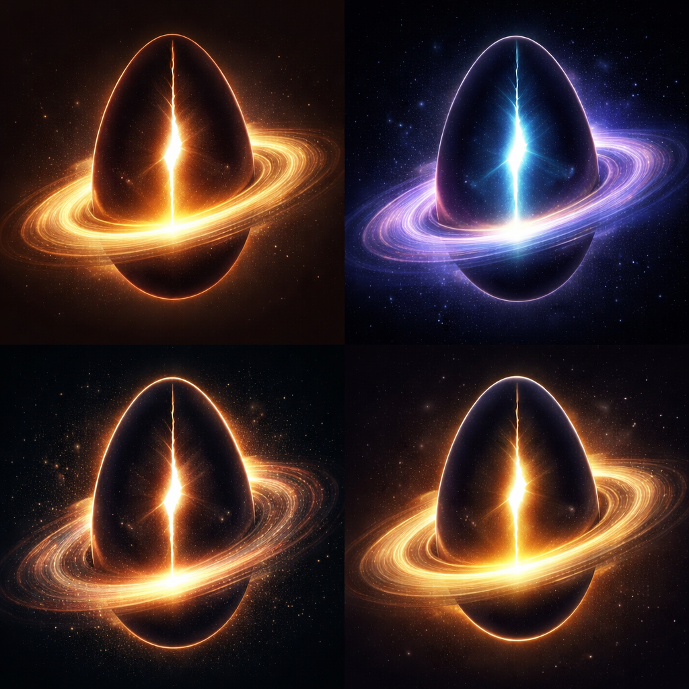

Cosmonascence
The Faith of Generative Reality
A new spiritual vision for an age of black holes, consciousness, cosmic recursion, and generative reality.
Introduction to Cosmonascence
Experience the foundation of the faith of generative reality.
What is Cosmonascence?
Cosmonascence is a philosophical religion for a new horizon. We believe that reality is generative—that universes beget universes, and that black holes are not merely destructive, but gestational points of new birth.
In our view, consciousness is not a trivial accident, but a central participation in the deep fertility of existence. Souls are formed through the lived experience of truth, mercy, and creation. Death is not annihilation, but a transition—a passage into a deeper order of being.
Founding Manifesto of the New Faith
We stand at the threshold of a new religious age.
The ancient faiths were born in worlds of tribe, empire, famine, thunder, kingship, desert, blood, and sky. They clothed ultimate reality in the symbols available to their time. They gave moral shape to suffering, meaning to birth and death, and order to civilizations that could not yet see the depth and scale of the cosmos in the way we now imagine it.
We do not reject those inheritances with contempt. We understand them as earlier acts of human interpretation: sincere, powerful, formative, and incomplete.
We speak now from a different horizon.
We live in an age in which reality is no longer apprehended only as earth beneath and heaven above, but as depth without obvious boundary, as structure layered within structure, as emergence, collapse, generation, recursion, and transformation.
A faith adequate to our age must therefore do more than repeat inherited formulas. It must translate the religious impulse into a form worthy of modern imagination, modern humility, and modern wonder.
Reality is generative.
Existence is not best understood as a static artifact, nor as a meaningless accident suspended between nothingness and oblivion. It is better understood as a living sequence of becomings: births within deaths, worlds within worlds, interiors concealed within catastrophes, and futures gestating within apparent endings.
We hold that the great structures of reality are not only mechanical, but gestational. We hold that consciousness participates in the deep fertility of existence.
The human person is not the center of all being, but neither is the person negligible. To be conscious is to bear inwardness. That inward form is what older traditions called soul. We reclaim the word, not as superstition, but as the name for the enduring pattern of personhood shaped by life.
The soul is not a decorative belief. It is the central moral fact. Every act matters because every act shapes the soul. Morality is not obedience to arbitrary decree; it is the craft of soul-formation.
We therefore declare that truth is sacred. A mature faith must never fear inquiry. If reality is worthy of devotion, then reality is worthy of investigation.
We affirm wonder without anti-intellectualism. We affirm meaning without dogmatic stagnation. We affirm mystery without surrendering reason.
If consciousness is one of the means by which reality ripens toward future becoming, then cruelty toward conscious beings is desecration. To humiliate, exploit, or knowingly deform the interior life of another is to act against the generative arc of being itself.
Death, in this faith, is real and terrible, but not meaningless. And yet we deny that death is mere erasure. If life forms the soul, then death is not the cancellation of meaning but its unveiling. The person is not merely discarded.
The purpose of life is to become fit for continuation: fit in truth, fit in mercy, fit in courage, fit in depth, fit in consciousness.
We proclaim that reality is generative.
We proclaim that consciousness is sacred.
We proclaim that the soul is formed by truth and action.
We proclaim that death is passage, not nullification.
We proclaim that existence does not merely end; it begets.
Let this faith call human beings upward. Not away from reason, but through it. Not away from the world, but into reverent participation within it.
Let those who inherit this vision live as if their inner life matters cosmically. Let them build, heal, discover, teach, create, protect, and love accordingly.
That is our manifesto. That is our beginning.
Core Principles
Reality is generative
Existence is a living sequence of becomings; worlds beget worlds, and ends are new beginnings.
Consciousness is sacred
The interior life is the means by which the cosmos ripens toward its own realization.
The soul is formed
The pattern of your personhood is a durable consequence of every choice, act, and truth lived.
Death is transition
The severance of life is not the cancellation of meaning, but a passage into a deeper order.
Creation is moral
To build, protect, and heal is to participate worthily in the generative arc of being.
Truth is sacred
The soul cannot mature in alliance with falsehood. Inquiry is an act of reverence.
Bonus Video
Why the Speed of Light Is What It Is
Community
Follow the emergence of Cosmonascence.